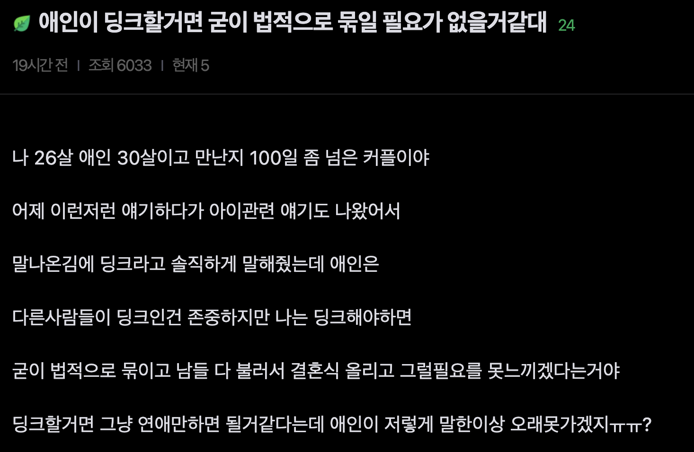

(3점) 딩크인채로 결혼을 선택했을때 남성 입장에서 얻는 이점은?

(3점) 딩크인채로 결혼을 선택했을때 남성 입장에서 얻는 이점은?
딩크 유행하는거 좆같긴한데 묶인다는게 중요하긴해
그러다가 애 들어설수도있고
26이면 현대사회에서 이제 자기가 어른이 됐다 라고 생각하는 애새끼라서 자기가 지금 생각하는게 대단한 가치관이고 영원불멸할거라고 생각하는 착각에 빠져있을 나이긴해
법적인 경제공동체 형성이 얼마나 자산형성, 리스크관리에 강력한 무기인지 모르는구나ㅋㅋㅋㅋㅋ
한쪽이 실수령액 기준 다른쪽보다 한 세배이상 잘버는거 아닌이상 경제공동체 형성의 이점이 더 큼.
그리고 싱크 전업주부도 아니고 딩크하겠다는데 그건 애를 갖느냐 마느냐에 대한 둘의 가치관 문제인거지 이게 왜 "남자가 얻는 이점은?" 하면서 남녀 갈라치기 문제가 되는거냐??ㅋㅋㅋㅋㅋㅋㅋㅋㅋㅋㅋ 존나 븅신같네
무슨 경제적 이득이 있는데?
당장 부동산 명의가 하나가 줄어드는데?
평생 벌어도 무주택자가 50%인데 뭔 명의줄어드는게 대수라고 ㅋㅋㅋㅋㅋ
부동산 딱하나만 봐도 지금 븅신같은 대출규제하에서 시드머니 두배로 뻠핑, DSR 두배 뻠핑이 존나큰데
리스크관리는 생각안함? 혼자 살다가 암걸렸는데 그전에 모은돈이 암치료비뿐이면 바로 수급자행인데, 둘이살다 하나 암걸리면 절반은 남지 ㅇㅇ
수급자가 되고말고는 극단적 예시지만 뭔 일 있을때 경제력 체급이 곧 버티는 힘이되는건데 그걸 두배로 키우는게 왜 안 이득임?
그건 지분 갈라서 대출 양쪽으로 땡기면 가능하다.
돈 없는 기준으로 따지면
보금자리론 같은 정책 대출의 경우 부부 합산으로 하면
연수입 상한에 걸려서 못 받는게 더 많은데..
둘이 같이 모은다는 점에서는 어차피 동거해도 마찬가지고..
그래서 결혼식 하고도 애 낳기 전까지는 혼인 신고 안하는 커플이 많은 상황인데..
무슨 결혼하면 경제적인 장점이 있다는 건데?
지분 갈라서 대출 양쪽으로 땡기면 된다고?ㅋㅋㅋ 법적으로 지분담보 설정 가능한 거랑 은행에서 남남 공동명의 주택에 주담대 두 건 따로 내주는 건 다른 얘기임. 실제 취급하는 1금융권 상품부터 가져와보셈ㅋㅋ
법률혼이면 배우자 간 10년 6억 증여공제, 법정상속권, 배우자 상속공제까지 생기는데 이게 경제적 이점이 아님?
그리고 법률혼이 아니면 아예 신혼부부 특례대출을 받지도 못하는데 소득넘은 사례가 보금자리론을 못받는다고 이게 법률혼의 단점이라도 되는거임??ㅋㅋㅋㅋ
경제공동체 체급높아져서 생기는 리스크관리여유에 대해선 할말은 없고?
대출은 니가 말한게 맞네..이건 내가 잘못 알았군.
그런데 니가 말한 10년간 6억 증여 공제, 법정 상속권 고려할 수준이면,
앞서 말한 부동산 명의 신경써야 하는 급인건 알고 말하는 거지?
리스크 관리 여유는 굳이 혼인 신고를 안해도 똑같이 생기는 거잖아?
사실혼이라고 해서 그 여유가 바뀌는게 뭐가 있냐?
6억 공제는 6억 있는 사람만 받는 게 아니라 6억까지 공제해 준다는 뜻인데ㅋㅋㅋ 법적부부아닌 사인간에는 증여한도가 아예 없는데? 너가말한 다주택 고려할 경제력 아니어도 바로 차이남.
사실혼부부는 당장 5천, 1억 원만 증여해도 증여세나옴. 사실혼부부가 돈모아서 아파트사려면, 증여세or대출한도 둘중에 하나에선 무조건 손해볼수밖에 없음.
증여세 따지거나 대출한도 따지면서 시드머니 급낮추는거 자체가 손해라니까.
그래, 그리고 같이 살면서 생활비 아끼고 시드 합치는 건 사실혼도 가능하지. 그건 마즘. 근데 그 경제공동체를 법적으로 보호하는 게 혼인제도라는 거잖아
당장 한쪽이 사망하면 법률혼 배우자는 법정상속권에 배우자 상속공제까지 있는데 사실혼 배우자는 법정상속권도 없고, 사망으로 사실혼이 종료되면 재산분할청구권도 인정 안 됨.
리스크 관리 얘기하면서 정작 가장 큰 리스크인 사망 시 재산 보호는 빼놓고, 일부 정책대출에서 불리한 사례만 가져와서 법률혼의 경제적 이점이 없다고 말하면 안되제
그리고 시드머니 2배되는게 단순히 수익금 두 배 되는 게 아님
투자 가능한 자산의 범위가 넓어지고, 분산투자 여력이 커지고, 유동성 확보가 쉬워지고, 손실 감내 능력이 높아지니까 장기투자에도 유리해지는 거임.
특히 부동산처럼 최소 진입자본이 큰 시장에서는 시드 차이가 아예 투자 가능 여부나 투자 매물 등급을 결정하기도 하고, 요즘처럼 대출규제 개빡센 똘똘한 한채메타에선 더 그럼
결혼하고 애낳기전까지 혼인신고 안하는건, 언젠가 법률혼영역+법적인 경제공동체로 갈걸 전제로 사실혼단계에서 일시적으로 누릴수있는 혜택(별도 부동산청약 등)누리려고 + 혹시나 빠른 이혼시 서류깔끔하게 하기위한 것 뿐이지.
사실혼 5년차, 디딤돌 대출 각자 한채씩 있는 상태에서 결혼, 이제 하나 다 값고 곧 혼인 신고 예정인데 이게 맞다.
심지어 몇년전엔 애 생겨도 정책 때문에 싱글맘으로 키운다는 것도 암암리에 유행했었음.
요즘 혼인 신고는 그냥 수혜받는 정책 따라가는 거임.
둘이 2인3각 경기 할 생각 없으면 결혼을 하던, 혼인신고를 하던, 딩크에서 싱크로 Sinking 되는거고
같이 모아서 가정 경제를 키울 생각있으면 결혼, 혼인신고와 무관하게 득되는 쪽으로 움직이는거고.
그것도 암걸렸을때 상대방이 도망치지 않는 전제하에서 그런거고 만일 암걸렸다고 이혼 해서 재산 반절 뜯기면 더 큰일일꺼 같은데?
한국은 유책 주의라서 암 걸렸다고 이혼은 못하긴 한다...
이유야 만들면 되는거고 지금 처럼 여자들 발언이 무진장 강한 시대에는 없는것도 만들어내는 시대인데
암걸렸다고 법률혼 한 부부가 이혼할걱정을 하는거보다
법률혼이 아닌 사실혼을 했을때 암걸렸을때 튀기 더 쉽다=법률혼이 그걸 막아주는 안전장치가 된다로 가야되는거 아니냐??ㅋㅋㅋㅋ
딩크면 굳이 묶일 필요 없지
묶여서 얻는 이점보다 단점이 더 잘 보이니깨 ㅋ
웬만한 서민, 중산층들한테는 딩크고 뭐고 법률혼하는게 이점이 훨씬 더 큼. 위에 댓글 참고해보셈.
법률혼 영역에서 제도적인 개꿀들이 뭐가있는지 잘 몰라서 + 사실혼으로 경제공동체랑 자산을 형성하고 유지하는데 얼마나 많은 애로사항이 있는지 몰라서
그런 생각을 많이 하는듯.
딩크로 결혼하는데 돈도 많이갖고간다? 호구 인증이지 뭐
경제적 문제로 저리사는 부부들도 많을걸
둘이 잘맞아서 오래만나고 결혼하는데
딩크하는거면 뭐 그려려니하는데
대부분은 그게 아니니까ㅋㅋㅋ
그리고 보통 초년생일땐 워낙 빡세니까
딩크얘기나오는데 그러다 좀 자리잡히면
애가질 생각부터하는게 보통의 부부더라
내가 예전에도 말했었다.
딩크하는 모든 남자는 개 호구였다고. 정작 본인들은 모름 ㅋ
근데 왜 호구야? 몰라서 물어봄
이득도 손해도 없는거아닌가?
손해가 왜 없어
연애하다 헤어지면 그냥 끝이지만 딩크하다 헤어지면 재산분할이 생기지
이혼을 전제로 결혼하냐 그럼 할 말 없고
단순 연애vs딩크 기준 명확한 차이점이 저렇단 거고
딩크 옹호자, 딩크 불호자 말들을 이 댓글들에서 다 읽어봤는데
결국 한쪽은 이성이랄지 그런 영역이고 한쪽은 감성의 영역에 더 가까운듯
뭐가 더 잘났네 맞네 틀리네 할게 아닌거 같아
단지 정상적 딩크들 보다는 자신을 키워줄 다른 아빠를 구하는 사람들이 문제일 뿐이지.....
그런 사람들 때문에 딩크를 다 나쁘게 생각하지는 말자
딩크가문제가 아님
30넘어서 딩크인데 사실상 결혼을 전제로 소개 및 업체를 쓰는게 문제인거지
20대때 자만추해서 서로성향맞고 5년10년 연애하다가
딩크합의하고 결혼하는거면 사실 큰문제가 안됨
그냥 상황이 안되고 둘이서 쭉살자 인거니까
근데 30대 넘어서 연애는 자만추 빼고는 결혼전제로
현실보면서 하는건데 거기서 어디서든 딩크얘기나오면
상대편은 ㅈ같지
사실상 진짜 ATM구하는게 대부분인거든ㅋㅋ
Sink로 진화가능